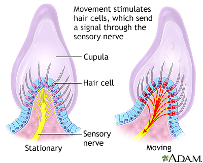

Vertigo is a type of dizziness that feels like you or the world around you is spinning, swaying, or moving. It can be associated with other symptoms.
Vertigo can be caused by a number of conditions,
Benign paroxysmal positional vertigo (BPPV), which can occur when otoconia become loose in the utricle and push on the cilia in the semicircular canals.
Vertigo attacks can last from seconds to hours, and in severe cases can last for days or months. Most people with vertigo improve without treatment, but medicines like prochlorperazine or antihistamines can help.
You can also try these tips to help with vertigo:
